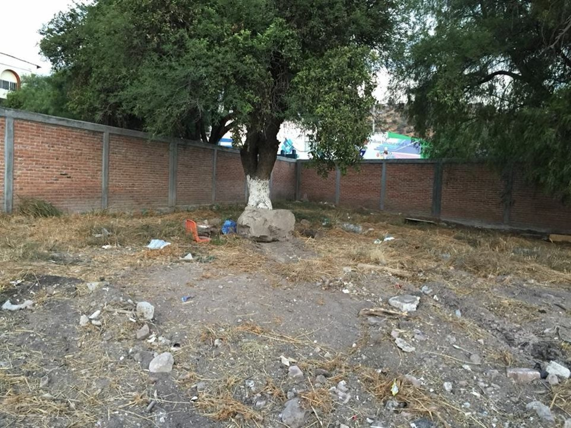
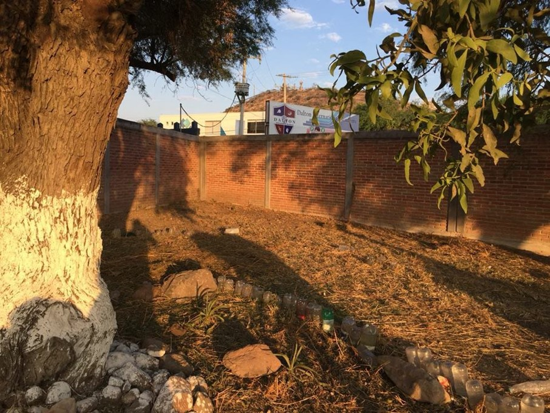
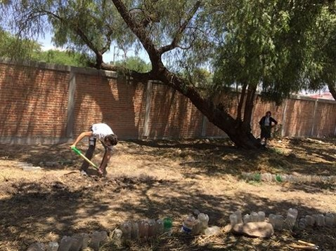

Composta Verde.
Regresar
Primera foto del espacio modificado ,Inicio del proyecto 16 de abril del 2018.Lo primero que se hizo fue recoger la basura, podar el pasto y limpiar todo el pasto seco. 



HUERTO
Preparando terreno para el huerto
Ahora con el nuevo huerto podremos plantar árboles en la parte trasera del plantel
Miércoles 18 de abril. Preparando el área para composta verde